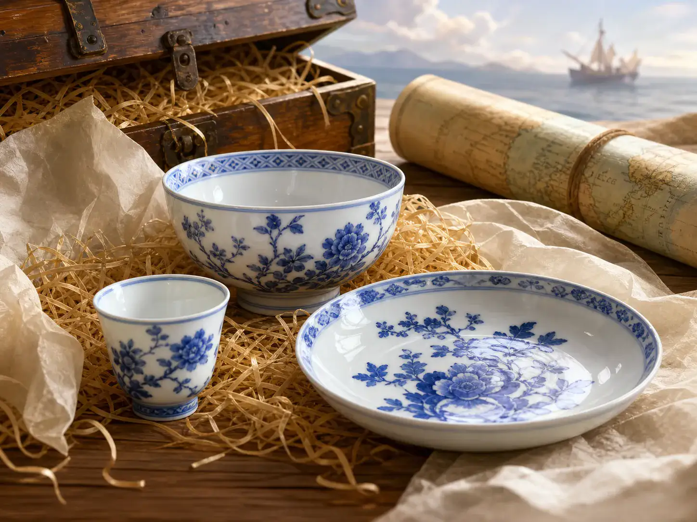
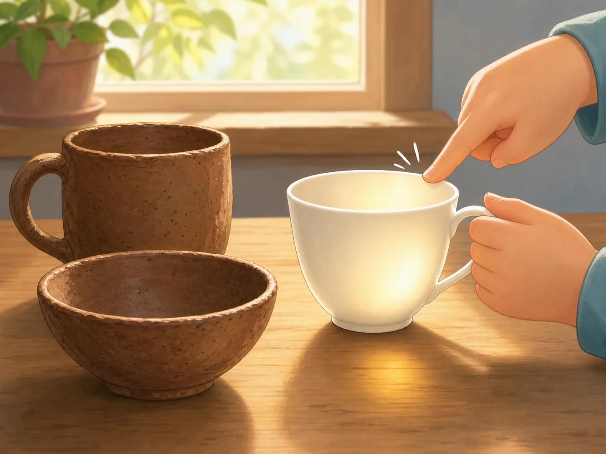
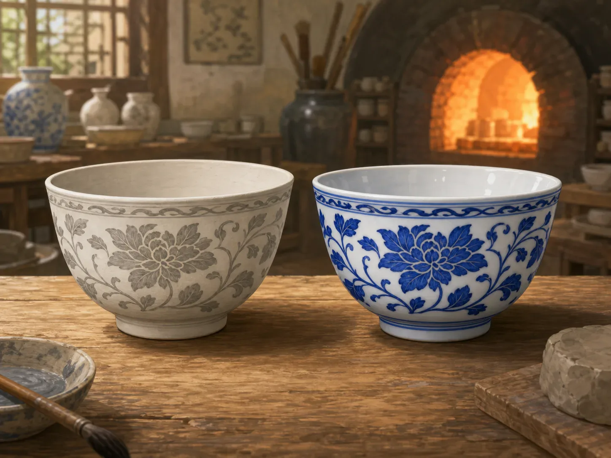

像玉石一样光滑的泥土：瓷器
Porcelain: Clay That Shines Like Jade
Page 1
很多人第一次记住中国，可能就是从一个瓷杯开始的
For Many People, China First Appeared in a Porcelain Cup

Long ago, many people far away thought of China as soon as they saw smooth, shining porcelain from China.
英语里的 “China” 很特别。它有时候是中国，有时候又是瓷器。
这说明很久以前，很多外国人一看到中国做的瓷杯、瓷碗和瓷盘，就会立刻想到这个国家。
为什么会这样？因为中国瓷器又白又亮，还很光滑，在很多人眼里，它看起来像泥土变出来的魔法。
The English word "China" is unusual. Sometimes it means the country, and sometimes it means porcelain.
That tells us something. Long ago, when many people far away saw bowls, cups, and plates made in China, they thought right away of the country itself.
Why? Because Chinese porcelain looked bright, smooth, and almost magical, as if ordinary earth had changed into something new.
Page 2
它和普通陶器不太一样，摸起来更硬，也更亮
It Is Different from Ordinary Pottery

Pottery and porcelain both come from earth, but porcelain is finer, harder, and can even glow a little when held to the light.
很多孩子会想：陶器和瓷器不都是泥土烧出来的吗？
是，可它们并不一样。普通陶器常常比较粗，瓷器却更细、更硬，也更光滑。
有些好瓷器对着光看，杯壁还会微微透亮。轻轻一敲，声音也常常清清脆脆的。所以瓷器看起来还是土，可它已经不像普通的泥土了。
Many children wonder, "Aren't pottery and porcelain both made from earth?"
Yes, but they are not the same. Ordinary pottery is often rougher. Porcelain is finer, harder, and smoother.
If you hold a fine porcelain cup to the light, the wall may even glow a little. Tap it gently, and it often gives a clear, ringing sound. So porcelain still begins as earth, but it no longer feels like ordinary clay.
Page 3
青花瓷最神奇的地方，是进窑前看不出最后的蓝
Blue-and-White Porcelain Hides Its Blue Until the Fire

The painter first puts gray-black patterns on the clay body. Only after the hot kiln does that color turn into the bright blue people know.
青花瓷是中国最有名的瓷器之一。可它最神奇的地方，是画的时候你还看不见最后的蓝色。
画师先在还没烧的瓷坯上画花纹。那时候颜色看起来灰灰黑黑的，并不耀眼。
等它进了很热很热的窑，出来以后，灰黑的颜色才会变成明亮的蓝。好像火不是把它烧坏了，反而把真正的颜色叫醒了。
Blue-and-white porcelain is one of China's most famous ceramic arts. But the most magical part is that, while the painter is working, the final blue is not there yet.
The painter first brushes patterns onto the unfired clay body. At that stage, the color looks gray and dark, not bright at all.
Then the piece goes into a very hot kiln. When it comes out, that dark color has turned into clear blue. It is almost as if the fire did not destroy the color. It woke it up.
Page 4
景德镇的窑火烧了很多很多年
In Jingdezhen, the Kiln Fires Burned for Centuries
中国有一座特别有名的瓷器城，叫中国最有名的瓷器城市之一。。很多很多年里，人们都在那里做瓷器。
而且这座城到今天还很热闹。有人去景德镇的一座陶瓷博物馆，能看到很多有名的瓷器作品。看从前烧出来的好瓷器，也有人去景德镇的一所大学，很多学生在那里学习陶瓷和做瓷器。学怎么拉坯、上釉和烧窑。
那里有瓷土，有木柴，也有会做瓷器的人。一代教一代，慢慢把这门本事传下去。所以一只漂亮的瓷杯背后，不只是泥土和火，还藏着一整座城的经验和耐心。
China has a very famous porcelain town called The Chinese town most famous for making porcelain.. For many centuries, people there kept making porcelain.
And the town is still busy with ceramics today. Some people visit the A museum in Jingdezhen where visitors can see many famous Chinese ceramic works. to look closely at old masterpieces. Others go to A university in Jingdezhen where many students study ceramics and porcelain making. to learn how to shape clay, add glaze, and fire a kiln.
The town had clay, firewood, and skilled makers. One generation taught the next, and the craft kept moving forward. So behind one beautiful porcelain cup, there is not only earth and fire. There is also the patience and experience of a whole town.
小结
In Summary
瓷器最让人惊讶的地方，是泥土居然能变得这么光滑、坚硬又好看。
从青花瓷的蓝，到景德镇长久不灭的窑火，瓷器告诉我们：有时候，最普通的土，也能变成很不普通的艺术。
The most surprising thing about porcelain is that earth can become something so smooth, strong, and beautiful.
From the blue of blue-and-white porcelain to the long-burning kilns of Jingdezhen, porcelain shows us that ordinary clay can become extraordinary art.